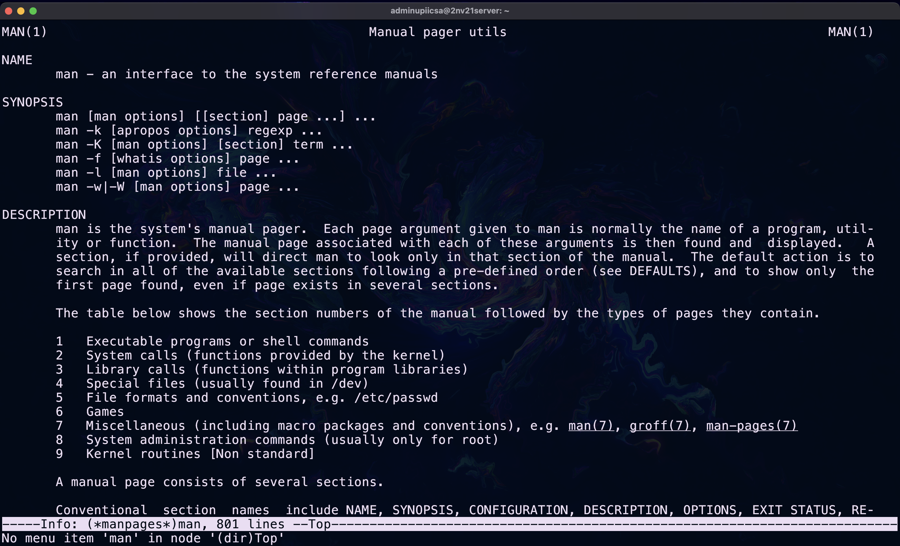
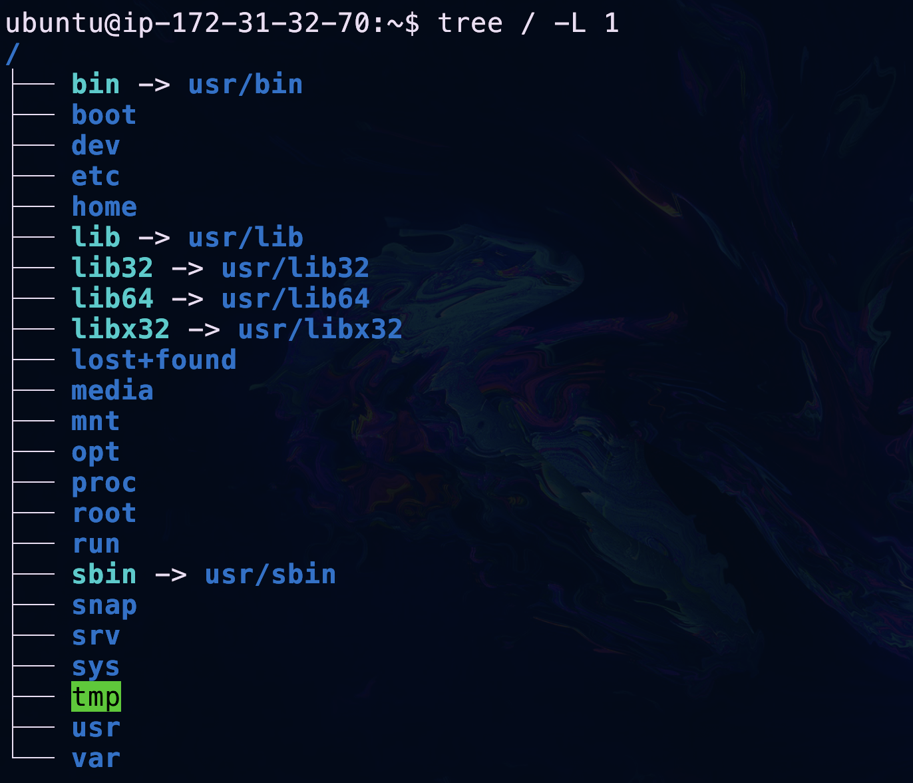
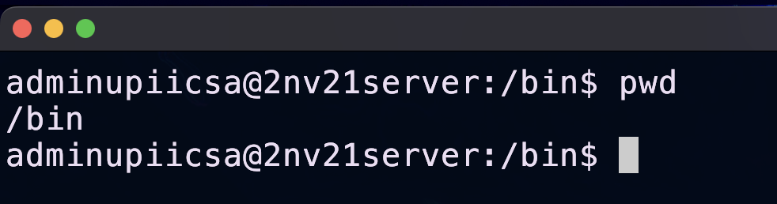
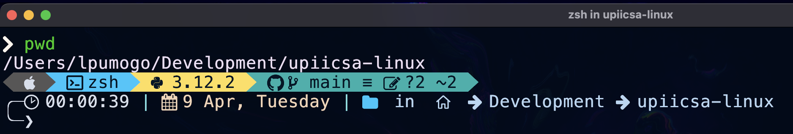
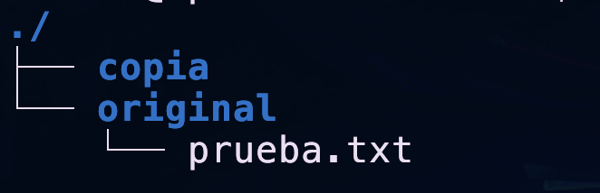
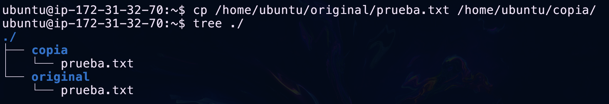
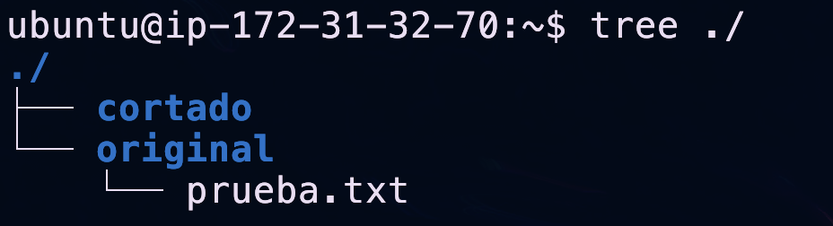
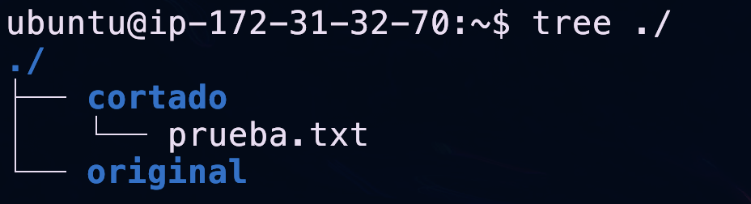

Módulo 03 Navegación básica
Introducción
La mayoría de los usuarios de computadoras fuera del mundo Linux y Unix no pasan mucho tiempo en la línea de comandos, pero como administrador de sistemas Linux, este es tu entorno de trabajo, por lo que debes tener habilidades en él.
Cuando utilizas un escritorio gráfico como Windows o macOS de Apple (o incluso las últimas versiones de Linux), existen "lugares" donde se almacenan tus cosas, "Imágenes", "Música", "Descargas", etc.
Pero si tienes algún conocimiento técnico, te darás cuenta de que debajo de todo esto hay una "estructura de directorios".
Directorios y ficheros
Es común que en el vocabulario técnico nos refiramos a las carpetas como directorios y a los archivos como ficheros.
Ejemplos:
C:\Users\Steve\Desktopen Windows/Users/Steve/Desktopen macOS/home/steve/Desktopen un sistema Linux.
De ahora en adelante, en el taller te indicaremos una serie de recursos en línea para un tema y luego te daremos un conjunto sencillo de tareas que debes realizar. Está perfectamente bien buscar en Google otros recursos en línea, consultar cualquier libro que tengas, preguntar a profesores, compañeros, etc.
De hecho, un elemento fundamental del diseño de este taller es obligarte a hacer un poco de tu propia investigación. Incluso los administradores de sistemas más experimentados harán una búsqueda en línea para encontrar consejos sobre cómo usar los comandos, por lo que cuanto antes adquieras ese hábito, mejor.
Tus tareas para este módulo
- Encontrar la documentación de los comandos que hemos usado hasta ahora.
- Navegar entre directorios, crear directorios, listar contenidos mover y borrar archivos.
RTFM
Este es un buen momento para mencionar que una de las muchas ventajas de Linux es que está diseñado para permitirte conocer el sistema y aprender a usarlo. La documentación está disponible en forma de manuales de texto, guías y foros. Es en ellos donde pasarás la mayor parte de tu tiempo durante este taller.
Mientras que los sistemas propietarios tienen alguna documentación gratuita, ves con mucha más frecuencia el uso de soporte técnico de pago para solucionar problemas o averiguar cómo se puede realizar una tarea en particular.
Aunque también puedes hacer esto con Linux (Canonical, RedHat y SuSE son ejemplos de empresas que ofrecen soporte de la misma manera), es muy probable que prefieras solucionarlo TÚ mismo.
Lo cual nos lleva al famoso acrónimo RTFM.
Leer el manual es lo primero que debes hacer cuando estás aprendiendo un comando. Vamos a repasar las muchas formas de obtener esa información, pero si al final de esa búsqueda necesitas más información, siempre puedes hacer una pregunta bien redactada en foros y otras comunidades.
man
Empezando con el comando man.
Cada aplicación instalada viene con su propia página en este manual, por lo tanto es posible consultar la página de pwd y ver todos los detalles sobre la sintaxis, mediante el siguiente comando:
Te recomendamos probar los siguientes comandos:
Como verás, son excelentes para la sintaxis detallada de un comando, pero muchos son extremadamente concisos y para otros, la cantidad de detalles puede resultar algo abrumadora.
tldr
¡Y es por eso que tldr es una herramienta tan poderosa! Puedes instalarlo fácilmente con los comandos:
Ejemplo de uso:
Comando
Output$ tldr pwd
pwd
Print name of current/working directory.More information: https://www.gnu.org/software/coreutils/pwd.
- Print the current directory:
pwd
- Print the current directory, and resolve all symlinks (i.e. show the "physical" path):
pwd -P
apropos
Si conoces una palabra clave o alguna descripción de lo que se supone que debe hacer el comando, puede probar con apropos o man -k de esta manera:
Comando
Output$ apropos "working directory"
git-stash (1) - Stash the changes in a dirty working directory away
pwd (1) - print name of current/working directory
pwdx (1) - report current working directory of a process
$ man -k "working directory"
git-stash (1) - Stash the changes in a dirty working directory away
pwd (1) - print name of current/working directory
pwdx (1) - report current working directory of a process
help
Pero pronto descubrirás que no todos los comandos tienen un manual que puedas leer con man.
Los comandos sin página en man están contenidos dentro del propio shell y los llamamos comandos integrados (built).
Hay algunos traslapes (es decir, comandos integrados que también tienen una página de manual), pero si man no funciona, usamos el comando help para mostrar información sobre ellos.
Ejemplo:
Comando sin página de man
Help para ese mismo comando
$ help export
export: export [-fn] [name[=value] ...] or export -p
Set export attribute for shell variables.
Marks each NAME for automatic export to the environment of subsequently
executed commands. If VALUE is supplied, assign VALUE before exporting.
Options:
-f refer to shell functions
-n remove the export property from each NAME
-p display a list of all exported variables and functions
An argument of `--' disables further option processing.
Exit Status:
Returns success unless an invalid option is given or NAME is invalid.
La mejor manera de saber si un comando es un comando integrado es verificar su tipo mediante el comando type
Ejemplo:
Comando integrado
Comando NO integrado
info
Y por último, el comando info lee la documentación almacenada en formato info.

Estructura de archivos
Todo es un fichero
En Linux y Unix todo es un fichero.
Los directorios son ficheros, los dispositivos son ficheros y los ficheros son ficheros.
Te sugerimos leer este artículo
Click aquí.
Un sistema operativo tiene miles de archivos de información y programas, imagina el problema que sería encontrarlos, ejecutarlos o manipularlos sin un orden bien establecido.
Por suerte todos los SO tienen una organización conocida como estructura jerárquica, de tipo árbol.

El nivel más alto del sistema de ficheros es / o directorio raíz (tambie llamado root).
Todos los demás ficheros y directorios están bajo el directorio raíz.
Por ejemplo, /home/enrique/calificaciones.txt muestra la ruta completa al fichero calificaciones.txt que está en el directorio enrique, que a su vez está bajo el directorio home, que por su parte está bajo el directorio raíz (/).
Actividad 1
Lee el manual: man hier.
Actividad 2
Responde lo siguiente:
- ¿Qué directorio contiene las "aplicaciones binarias importantes"?
- ¿Qué directorio contiene los ficheros de configuración?
- ¿Qué directorio contiene "directorios personales para los diferentes usuarios"?
- ¿En qué directorio podemos encontrar "aplicaciones opcionales (de terceros)"?
- ¿Cuál es el directorio personal del superusuario?
- ¿En qué directorio encontramos archivos temporales (temporary files)?
Directorio Personal
La conducta por defecto de los sistemas Linux, es que al ingresar te encuentres en tu directorio personal, contenido en /home, dicho directorio es el lugar destinado a almacenar tus archivos personales.
Normalmente el directorio se llama como el usuario.
Ejemplo:
- El usuario
enriquetiene el directorio personal/home/enrique
Actividad 3
Infiera cuál será el directorio personal de los usuarios:
ramonandyjose
Tipos de rutas
Al trabajar con sistemas LINUX/UNIX cada fichero tendrá una ubicación única, es decir, si ya existe un archivo llamado saludos.txt en la carpeta home/pruebas/ nadie puede crear un archivo con el mismo nombre en la misma carpeta.
Reflexione brevemente: ¿Será posible que se cree otro archivo llamado saludos.txt en una carpeta distinta?
La respuesta es sí, los siguientes ficheros pueden co-existir sin problemas:
/home/pruebas/saludos.txt/home/enrique/saludos.txt
Lo relevante aquí es saber cómo hace el SO para permitir que existan archivos con el mismo nombre pero en diferentes ubicaciones.
Ruta absoluta
Para linux cada fichero tiene una ruta absoluta asociada, que funge como la dirección exacta dentro del sistema de archivos donde algo está localizado.
La ruta absoluta siempre nos dice en dónde se encuentra algo tomando como referencia el directorio / (root).
Ejemplos de rutas absolutas:
/etc/passwd/usr/bin/man/usr/bin/bash
Ruta relativa
Una ruta "relativa" nos dice la ubicación de un fichero con respecto al directorio en el que nos encontramos.
Suponga que existe la siguente ruta absoluta en su sistema:
/home/pruebas/saludos.txt
Si usted ingresa como el usuario pruebas su directorio personal será /home/pruebas, por lo que si quiere acceder al fichero saludos.txt bastará con que se refiera a él como:
./saludos.txt
Porque el SO interpreta ./ como el directorio actual, es decir: /home/pruebas y en consecuencia:
/home/pruebas/saludos.txt es equivalente a ./saludos.txt.
pwd
Los usuarios pueden navegar por los directorios que forman la estructura jerárquica (siempre y cuando tengan permiso).
Al navegar cambiaremos de directorio, el directorio en el que nos encontramos se llama directorio actual de trabajo (working directory).
Simpre podemos conocer la ruta absoluta de nuestro directorio actual de trabajo mediante el comando:
Actividad 4
Obten tu directorio actual de trabajo.
prompt
Se llama prompt al carácter o conjunto de caracteres que se muestran en una línea de comandos para indicar que está a la espera de órdenes. Este puede variar dependiendo del intérprete de comandos y suele ser configurable.
Prompt y la ruta actual
Generalmente, su "prompt" también está configurado para brindarle al menos parte de la información relativa a su ruta actual, por lo que si estoy en el directorio /etc, entonces el mensaje podría ser: enrique@202.203.203.22:/etc$ o simplemente: /etc: $


cd
El comando cd te permite navegar entre los diferentes directorios del sistema.
Ejemplo:
El comandocd /var/log te llevará a la carpeta /var/log.
Intenta ejecutando:
Verifica tu ruta absoluta con pwd.
Vuelve a tu directorio HOME
El comando cd sin ninguna ruta específicada, por defecto te mandará a tu directorio personal también conocido como ~.
Directorio padre
Una ventaja de la existencia de las rutas relativas es el poder referirnos al directorio padre de cierto fichero con la notación ..
Por ejemplo, si usted se encuentra en la ruta /var/log puede regresar a /var mediante el comando:
Actividad 5
Ingrese a /var/log/ luego ejecute estos comandos:
ls
El comando ls (lista) le dará una lista de los ficheros y subcarpetas contenidos en su directorio actual de trabajo.
Switches de ls
Como muchos comandos de Linux, existen opciones (conocidas como "switches") para alterar el significado del comando o el formato de salida.
Pruebe con un ls simple, luego ls -l -t y luego intente con ls -l -t -r -a
Archivos ocultos
Por convención, los archivos con un carácter inicial "." se consideran ocultos y ls, y muchos otros comandos, los ignorarán.
El switch -a nos permite verlos.
Sintaxis de los modificadores/switches
Una nota sobre los modificadores: generalmente, la mayoría de los comandos de Linux aceptarán uno o más "parámetros" y uno o más "switches".
Entonces, cuando decimos ls -l /var/log, "-l" es un modificador para decir "formato largo" y "/var/log" es el "parámetro".
Muchos comandos aceptan una gran cantidad de modificadores y, por lo general, estos se pueden combinar (por lo tanto, de ahora en adelante, use ls -ltra, en lugar de ls -l -t -r -a.
Identifique los directorios en su directorio personal
Estando en el directrorio /etc, escriba:
d" como primer carácter en la línea son directorios (carpetas) en lugar de archivos.
También pueden mostrarse en un color o fuente diferente; de lo contrario, agregar el modificador :
"--color=auto" debería hacer esto:
mkdir
Puedes crear un nuevo directorio con el comando:
Cree su primer directorio
Ve a tu directorio de personal, escribe pwd para comprobar que está en el lugar correcto y luego crea un directorio, por ejemplo para crear uno llamado "primero", simplemente escriba:
ls para ver el resultado.
Puede crear aún más directorios, anidarlos dentro de directorios y luego navegar entre ellos con la ayuda del comando cd.
touch
Puede crear un nuevo fichero vacío con el comando:
Uso original de touch
El propósito original del comando touch no es crear ficheros, sino actualizar la hora y fecha de acceso y modificación del archivo específicado.
Sin embargo, si se le pasa como parámetro un fichero que no existe, lo creará sin contenido.
cp
Es posible copiar ficheros o directorios mediante el comando:
Ejemplo:
Suponga que existen los siguientes ficheros:
/home/ubuntu/original/prueba.txt/home/ubuntu/copia/

Puedo generar el archivo /home/ubuntu/copia/prueba.txt mediante el comando:

mv
Es probable que se encuentre familiarizado con la operación "cortar", que consta de realizar una copia de algún elemento en otra ruta y posteriormente eliminar la versión original, esa operación se llama mover en Linux.
Es posible mover (cortar) ficheros o directorios mediante el comando:
Suponga que existen los siguientes ficheros:
/home/ubuntu/original/prueba.txt/home/ubuntu/cortado/

Puedo mover el archivo /home/ubuntu/original/prueba.txt a /home/ubuntu/cortado/prueba.txt mediante el comando:

rm
El comando rmnos permite eliminar archivos.
Hay un comando que nos permite eliminar directorios vacíos.
Pero si el directorio tiene contenido, el comandormdir dará error por lo que debemos pedir a rm que elimine de forma recursiva.
cat
La forma más básica de leer el contenido de un fichero es mediante el comando:
Ejercicios recomendados
Creación de directorios
Crea el siguiente árbol de carpetas:
~/Tu_Nombre/Semana_01/Practica_01
Creación de ficheros
Crea los siguientes ficheros:
~/Tu_Nombre/Semana_01/Practica_01/Tu_nombre.txt~/Tu_Nombre/Semana_01/Practica_01/Tu_comida_favorita.txt
Eliminación de ficheros
Elimina el fichero:
~/Tu_Nombre/Semana_01/Practica_01/Tu_nombre.txt
Cambiar ficheros de carpeta
Cambia el fichero:
~/Tu_Nombre/Semana_01/Practica_01/Tu_comida_favorita.txt
a la ruta
~/Tu_Nombre/Semana_01/Practica_01/
Mover carpetas
Cambia la carpeta:
~/Tu_Nombre/Semana_01/Practica_01/.txt
a la ruta
~/Tu_Nombre/
Eliminar carpetas
Elimina la carpeta:
~/.eliminame
Pregunta RETO 1
Accede a la plataforma Overthewire, lee las instrucciones y conectate al nivel 0.
1.- El contenido de este tip está oculto, se recomienda leerlo solo si NO se te ocurre ninguna solución.
Usa el siguiente comando:
Pregunta RETO 2
Obten la contraseña del nivel 1 una vez estés conectado al nivel 0.
Pregunta RETO 3
Obten la contraseña del nivel 2 una vez estés conectado al nivel 1.
1.- El contenido de este tip está oculto, se recomienda leerlo solo si NO se te ocurre ninguna solución.
El nombre del fichero "-" está causando problemas, prueba con la ruta absoluta o la ruta relativa.
2.- El contenido de este tip está oculto, se recomienda leerlo solo si NO se te ocurre ninguna solución.
Prueba con el comando:
Pregunta RETO 4
Obten la contraseña del nivel 3 una vez estés conectado al nivel 2.
1.- El contenido de este tip está oculto, se recomienda leerlo solo si NO se te ocurre ninguna solución.
Quizá lo siguiente te sea útil:
Pregunta RETO 3
Obten la contraseña del nivel 4 una vez estés conectado al nivel 3.
1.- El contenido de este tip está oculto, se recomienda leerlo solo si NO se te ocurre ninguna solución.
No olvides la existencia de ficheros y directorios ocultos.
Conclusión
Tener la capacidad de moverte con confianza por la estructura de directorios en la línea de comandos es importante, ¡así que no pienses que puedes pasarlo por alto!
Sin embargo, estas habilidades son algo que utilizarás constantemente a lo largo de todas las lecciones del taller, así que no te desesperes si esto no "hace clic" de inmediato.
Referencias
- linuxupskillchallenge
- Difference between help, info and man command
- GNU Texinfo
- Explore the Linux file system
- Linux File System
- Simple Terminal Commands on Ubuntu
- Solaris Unix Commands
- Sistemas de archivos